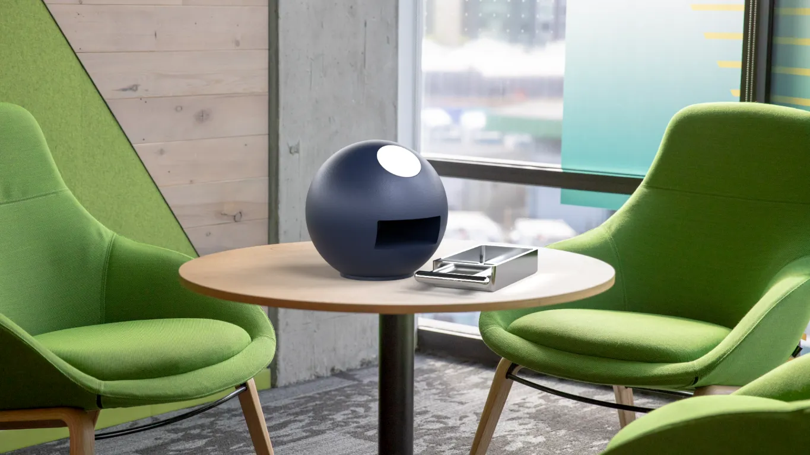
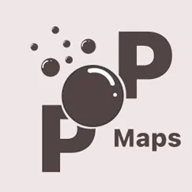
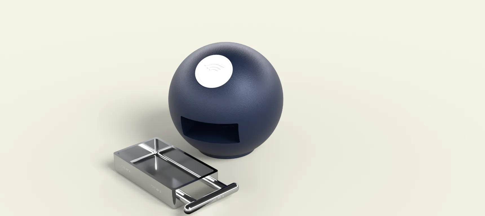
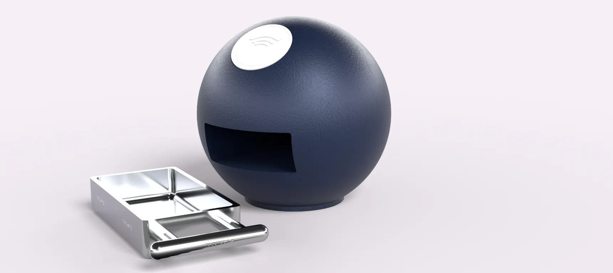
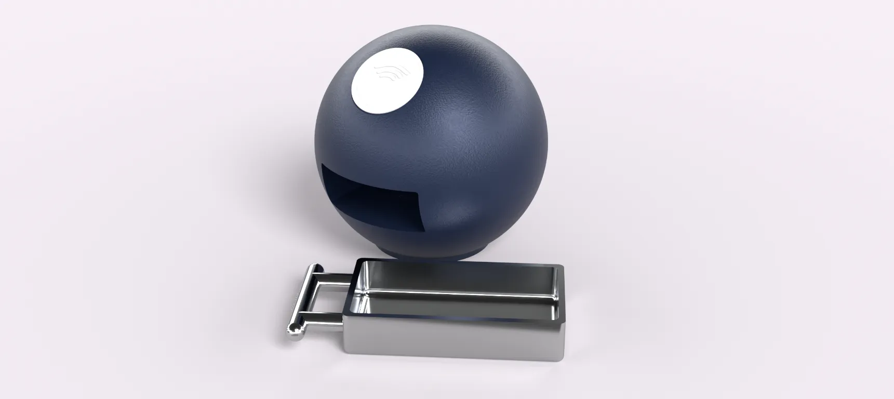

THE BUBBLE
A self checkout for libraries, paired with an accessible app that lets visually impaired users take out books in a format that suits their needs. The bubble also works as a normal self checkout, so every library goer can use it.

People with visual impairments struggle to read average print because of small font sizes, poor typefaces and low contrast. Visually impaired users need other ways to read that books cannot provide. Giving them control over how a book is presented would improve their library experience, and I want the bubble to integrate them into the library system rather than set them apart.
To fit the brief, I added a function to annotate and highlight the books you have taken out, and an accessible map of the Brighton library where people can record their memories.



The clean aesthetic of Apple's UI was a major inspiration for the app, because its clear contrast and minimalist colour scheme let the most users reach the content. Self checkouts were also an inspiration for the bubble, since they use the same RFID technology and show clearly how they are used.
iOS has a minimum font size of 17, which shaped the layout of the app. The app uses one standardised typeface, SF Pro, with heavier weights for smaller text. Icons are dark grey against white menus, and every action is indicated in more than one way to keep contrast high.
The base is rubber, which keeps the bubble from moving on a desk and is biodegradable. The body is polished aluminium, which is durable and fits well in library interiors. The tray is left unpainted so its texture contrasts with the rest of the bubble and makes it easier to tell apart.
The handle is 3cm in diameter and 15cm long, sized to suit an average male hand breadth of 8.9cm. As a tabletop kiosk, the bubble can be used by people of any height.
The main page of the app has a clearly visible NFC button. Once pressed, it scans for an RFID tag in the book and shows the title it has read. Once the book is on your phone, you can add annotations, highlights and your own images. The app also helps you find the bubbles placed around the library.

A heuristic evaluation showed that my first app did not support visually impaired users, so I restarted it with a sleek font, neutral colours and a clear back arrow or cross on every page. The final design is clean and easy to navigate, but its manufacturability and drafted angles could be better, and auditory features could be added in future.